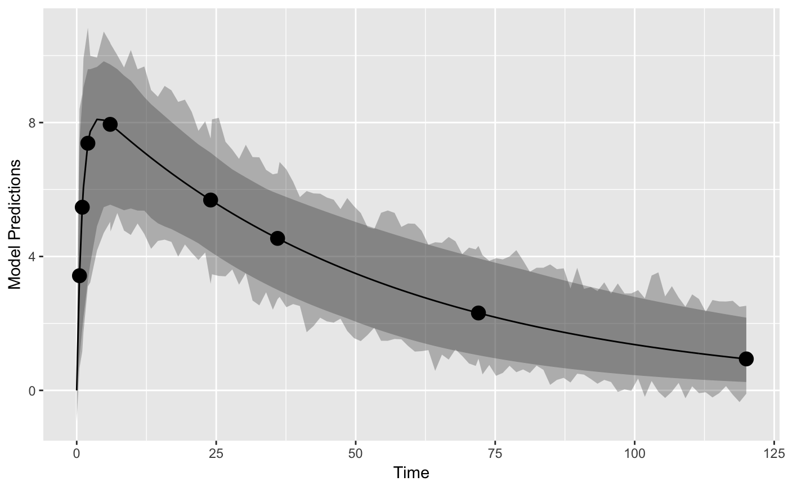
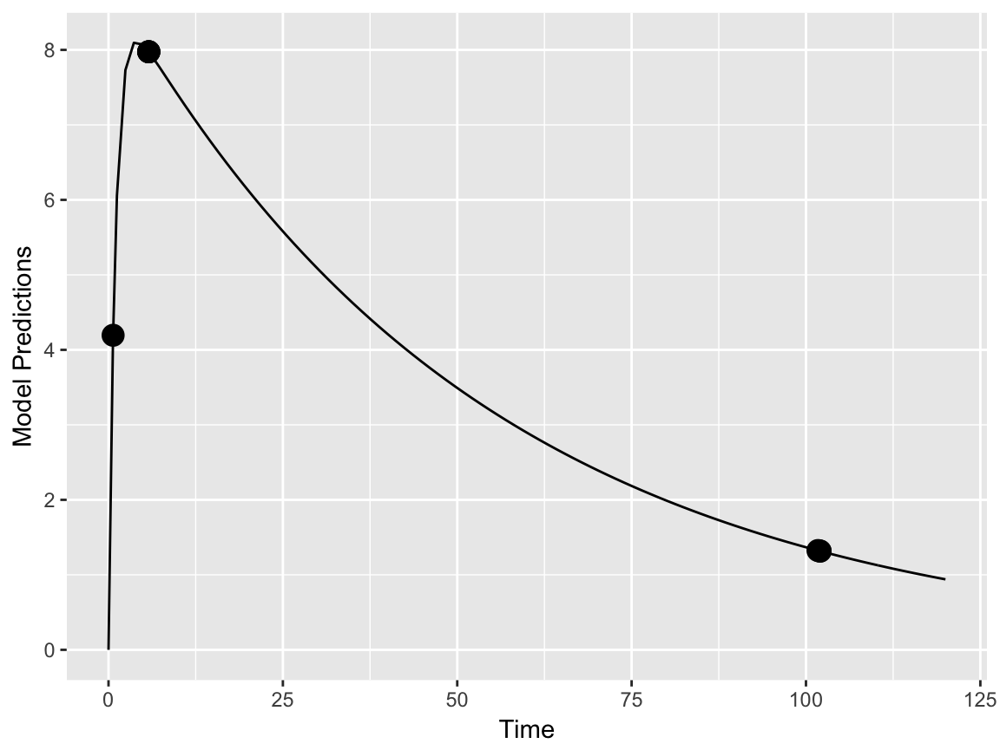
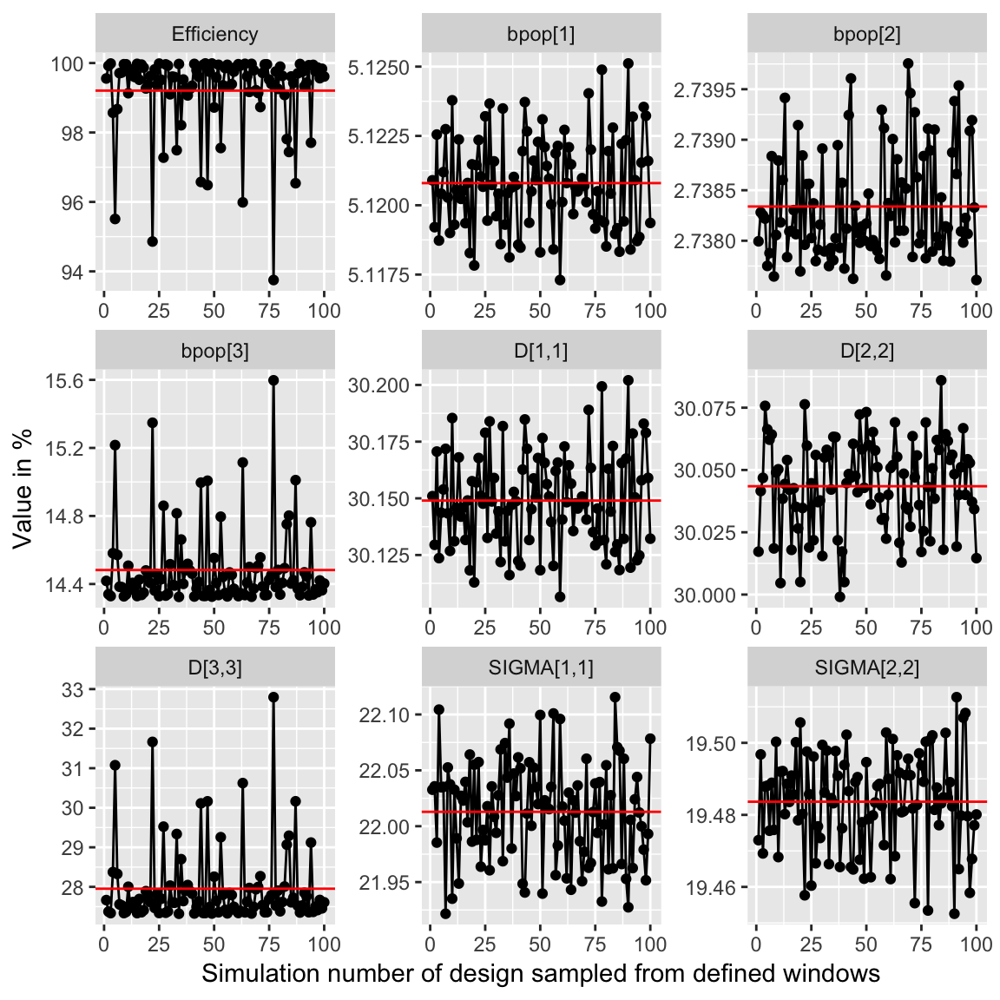
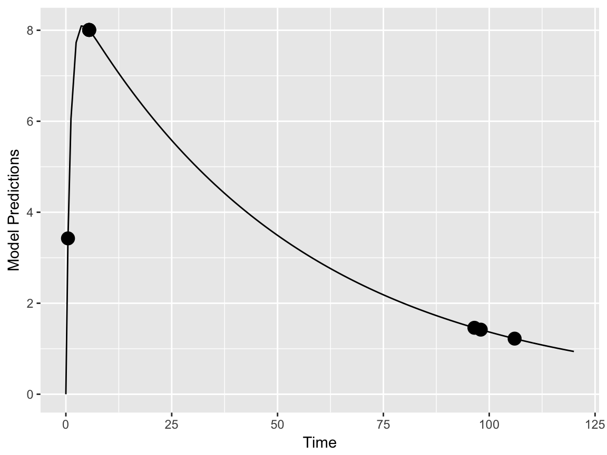
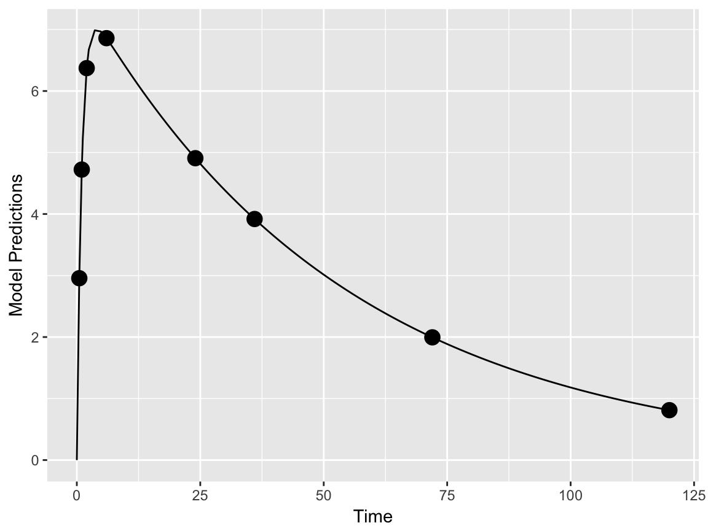

optimization.RmdThe standard function to optimize designs in PopED is poped_optim. This function is quite flexible and allows for optimization of a number of different types of design variables using a number of different optimization algorithms. However, poped_optim may not suit all needs for design optimization. To that end, PopED has methods implemented to ease the use of other optimization tools. Below, the types of optimization problems one might want to solve and the algorithms used to solve these problems are presented.
First we have to define a model, designs and design space. We choose a simple 1-compartment model with linear elimination and absorption. The design is one group of individuals with a single oral dose of a drug with 8 sample time points.
#-- Model: One comp first order absorption
ff <- function(model_switch,xt,parameters,poped.db){
with(as.list(parameters),{
y=xt
y=(DOSE*KA/(V*(KA-CL/V)))*(exp(-CL/V*xt)-exp(-KA*xt))
return(list(y=y,poped.db=poped.db))
})
}
# -- parameter definition function
sfg <- function(x,a,bpop,b,bocc){
parameters=c(CL=bpop[1]*exp(b[1]),
V=bpop[2]*exp(b[2]),
KA=bpop[3]*exp(b[3]),
DOSE=a[1])
return(parameters)
}
## -- Define initial design and design space
poped.db <- create.poped.database(ff_fun=ff,
fg_fun = sfg,
fError_fun = feps.add.prop,
bpop=c(CL=0.15, V=8, KA=1.0),
notfixed_bpop=c(1,1,1),
d=c(CL=0.07, V=0.02, KA=0.6),
sigma=c(0.01,0.25),
groupsize=32,
xt=c( 0.5,1,2,6,24,36,72,120),
minxt=0,
maxxt=120,
a=c(DOSE=70),
mina=0,
maxa=100)
# create plot of model
plot_model_prediction(poped.db,IPRED = T, DV = T)
We can optimize the sample times of the design1. The search for the optimal design is numerically challenging and it is important to use an optimizer which is robust with respect to the choice of the
output <- poped_optim(poped.db, opt_xt=T)summary(output)
#> ===============================================================================
#> FINAL RESULTS
#> Optimized Sampling Schedule
#> Group 1: 0.659 5.771 5.772 5.772 5.772 101.7 102 102
#>
#> OFV = 56.7172
#>
#> Efficiency:
#> ((exp(ofv_final) / exp(ofv_init))^(1/n_parameters)) = 1.1795
#>
#> Expected parameter
#> relative standard error (%RSE):
#> Parameter Values RSE_0 RSE
#> bpop[1] 0.15 5.10 5.12
#> bpop[2] 8.00 3.03 2.74
#> bpop[3] 1.00 14.26 14.33
#> D[1,1] 0.07 29.76 30.15
#> D[2,2] 0.02 36.68 30.04
#> D[3,3] 0.60 26.75 27.33
#> SIGMA[1,1] 0.01 32.01 22.01
#> SIGMA[2,2] 0.25 25.64 19.48
#>
#> Total running time: 20.915 seconds
plot_model_prediction(output$poped.db)
We see that there are three distinct sample times for this design (support points) with an uneven distribution of sample times at each support point. This means that for this model, with these exact parameter values, that the most information from the study to inform the parameter estimation is with these sample times.
Of course, this means that there are multiple samples at some of these time points. We can explore a more practical design by looking at the loss of efficiency if we spread out sample times in a uniform distribution around these optimal points (\(\pm 30\) minutes).
plot_efficiency_of_windows(output$poped.db,xt_windows=0.5)
Here we see the efficiency (\((|FIM_{optimized}|/|FIM_{initial}|)^{1/npar}\)) drop below 80% in some cases, which is mostly caused by an increase in the D[2,2] parameter uncertainty (BSV on absorption). Smaller windows or different windowing on different samples may be in order here. To investigate see ?plot_efficiency_of_windows.
In the previous example we optimized over a continuous design space (sample times could be optimized to be any value between a lower and an upper limit). We could also limit the search to only “allowed” values, for example, only samples taken on the half-hour are allowed.
poped.db.discrete <- create.poped.database(poped.db,discrete_xt = list(seq(0,120,by=0.5)))
output_discrete <- poped_optim(poped.db.discrete, opt_xt=T)summary(output_discrete)
#> ===============================================================================
#> FINAL RESULTS
#> Optimized Sampling Schedule
#> Group 1: 0.5 5.5 5.5 5.5 5.5 96.5 98 106
#>
#> OFV = 56.6995
#>
#> Efficiency:
#> ((exp(ofv_final) / exp(ofv_init))^(1/n_parameters)) = 1.1769
#>
#> Expected parameter
#> relative standard error (%RSE):
#> Parameter Values RSE_0 RSE
#> bpop[1] 0.15 5.10 5.11
#> bpop[2] 8.00 3.03 2.74
#> bpop[3] 1.00 14.26 14.37
#> D[1,1] 0.07 29.76 30.04
#> D[2,2] 0.02 36.68 30.06
#> D[3,3] 0.60 26.75 27.49
#> SIGMA[1,1] 0.01 32.01 22.00
#> SIGMA[2,2] 0.25 25.64 19.62
#>
#> Total running time: 31.488 seconds
plot_model_prediction(output_discrete$poped.db)
Here we see that the optimization ran somewhat quicker, but gave a less efficient design.
One could also optimize over dose, to see if a different dose could help in parameter estimation .
output_dose_opt <- poped_optim(output$poped.db, opt_xt=T, opt_a=T)In this case the results are predictable … higher doses give observations with somewhat lower absolute residual variability leading to both groups at the highest allowed dose levels (200 mg in this case).
Optimizing the dose of a study just to have better model parameter estimates may be somewhat implausible. Instead, let’s use a cost function to optimize dose based on some sort of target concentration … perhaps \(C_{max}\) of 7 mg/L.
First we define the criteria we use to optimize the doses, here a least squares minimization.
crit_fcn <- function(poped.db,...){
pred_df <- model_prediction(poped.db,model_num_points = 1000)
return((max(pred_df$PRED)-7)^2)
}
crit_fcn(output$poped.db)
#> [1] 1.231404Now we minimize the cost function
output_cost <- poped_optim(poped.db, opt_a =T, opt_xt = F,
ofv_fun=crit_fcn,
maximize = F)summary(output_cost)
#> ===============================================================================
#> FINAL RESULTS
#>
#> Optimized Covariates:
#> Group 1: 60.4216
#>
#> OFV = 7.79468e-14
#>
#> Efficiency:
#> (ofv_final / ofv_init) = 6.3299e-14
#>
#> Expected parameter
#> relative standard error (%RSE):
#> Parameter Values RSE_0 RSE
#> bpop[1] 0.15 5.10 5.2
#> bpop[2] 8.00 3.03 3.1
#> bpop[3] 1.00 14.26 14.4
#> D[1,1] 0.07 29.76 31.0
#> D[2,2] 0.02 36.68 38.3
#> D[3,3] 0.60 26.75 27.0
#> SIGMA[1,1] 0.01 32.01 37.5
#> SIGMA[2,2] 0.25 25.64 24.2
#>
#> Total running time: 3.858 seconds
get_rse(output_cost$FIM, output_cost$poped.db)
#> bpop[1] bpop[2] bpop[3] D[1,1] D[2,2] D[3,3]
#> 5.199634 3.098482 14.356624 30.990456 38.284929 27.014408
#> SIGMA[1,1] SIGMA[2,2]
#> 37.537279 24.177495
plot_model_prediction(output_cost$poped.db)
Tip: to make the optimization run faster use the option parallel = T in the poped_optim command.↩